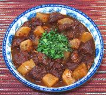

|
Pork Cheeks, Red-BraisedChina - Sichuan | ||||
| Serves: Effort: Sched: DoAhead: |
3 w/rice ** 2-1/4 hrs Yes |
Pork cheeks are an ideal cut for flavorful long cooked stews and braises, though not easy to find. Sichuan "red cooked" is quite different from "red cooked" in the rest of China, a lot less soy sauce. | |||
|
1-1/2 1 3 10 1-1/2 1-1/2 2 ------ 1 2 1 1/2 1/2 ------ |
# in oz T T c --- t T t --- |
Pork Cheeks (1) Ginger Root Scallions Daikon Radish (2) Oil Chili Bean Paste (3) Stock, Pork -- Seasonings Soy Sauce, Dark Rice Wine (4) Black Cardamom Star Anise Salt -- Garnish Cilantro leaves |
Prep - (15 min)
|